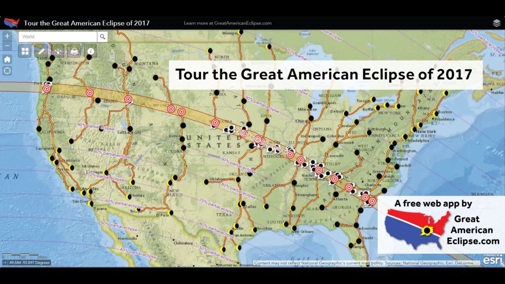
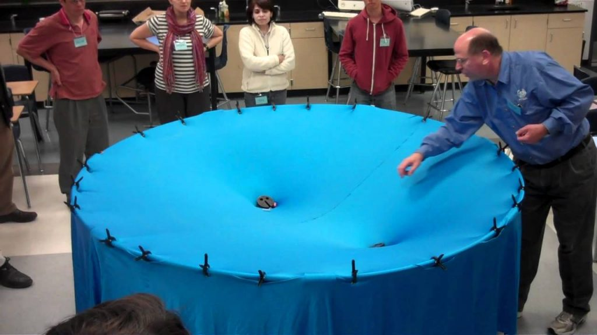
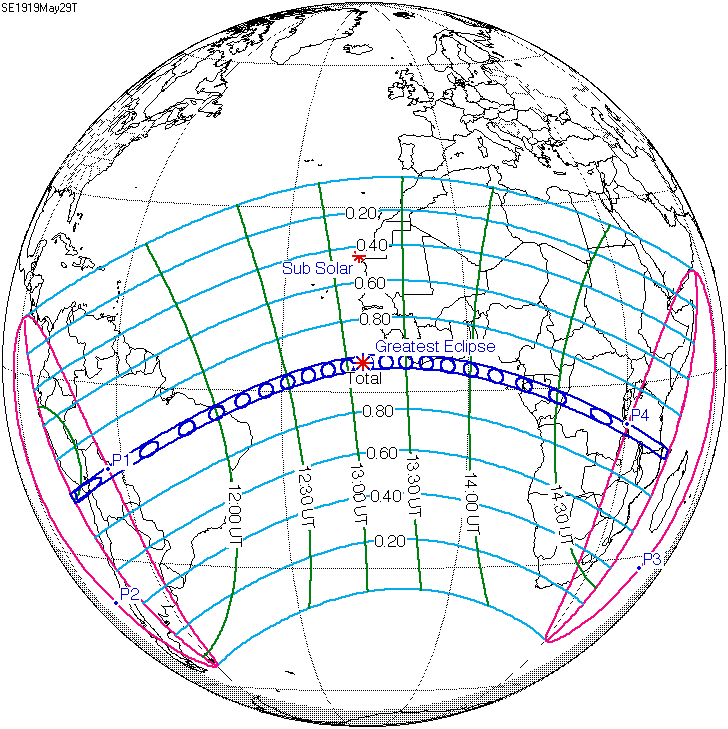

Sifat gerhana matahari penuh pada 21 Ogos 2017 yang berlaku sepanjang benua Amerika Utara dari Pantai Barat sehingga Pantai Timur membuatkan para peminat gerhana menamakannya “The Great American Eclipse”. Kalau ada yang berminat untuk mencerap, bolehlah terbang ke Amerika Syarikat jika mampu (bagi yang tidak mampu jom kita berhuhu >~<).

Tapi dalam banyak-banyak gerhana, mungkin gerhana yang paling diingati dalam sejarah Fizik ialah pada 29 Mei 1919 kerana ia mengesahkan teori relativiti umum Einstein.
Relativiti Umum
Pada tahun 1915, setelah berdekad memikirkannya, Einstein keluarkan buah fikiran bahawa ruang sebenarnya terdiri daripada rentasan ruang-masa tidak seperti yang kita fikirkan. Graviti, menurut Einstein hanyalah kesan daripada jisim melengkung ruang-masa dan disebabkan jisim lain patuh pada ruang-masa, pergerakannya juga akan terjejas. Hasil daripada itu, kita boleh perhatikan planet mengorbit matahari macam gasing Beyblade dalam mangkuk yang melengkung.

Gambaran bagaimana jisim melengkung ruang masa dan bagaimana jisim lain mengorbitnya - Ihsan apbiolghs dalam “Gravity Visualised”
Kanta Graviti
Namun, teori itu ada kesan sampingannya! Jisim bukan satu-satunya benda yang terkesan dan patuh dengan ruang dan masa. Semua benda yang wujud dalam ruangan 3 dimensi mesti patuh dengan ruang dan lengkungannya termasuklah cahaya. Maknanya cahaya pun akan membengkok bila melalui jasad berjisim!
Kesan membengkokkan cahaya melalui lengkungan ruang-masa yang dihasilkan sesuatu jisim diberikan nama Kanta Graviti [Gravitational Lensing]. Maka, kalau nak buktikan Einstein itu betul, kita kena buktikan yang Kanta Graviti itu wujud.
Gerhana Matahari
Jisim matahari cukup besar untuk kita lihat kesan pembengkokan cahaya tapi ada satu masalah: Matahari sangatlah terang sampai susah untuk kita lihat cahaya dari bintang lain. Di sinilah fenomena gerhana matahari memainkan peranan. Bulan cukup besar untuk menghalang cahaya matahari dan memberikan ruang untuk kita lihat cahaya dari bintang di sebaliknya.

Perjalanan gerhana matahari pada 29 Mei 1919. (Lesen Domain Awam)
{kind=link}
Maka, fizikawan menggunakan peluag ini untuk mendapatkan kebenaran di sebalik Teori Einstein. Fizikawan yang berjaya membuat cerapan tersebut ialah Sir Arthur Eddington.
Risau akan mendung seperti yang ditimpa pasukan Samuel A. Mitchell pada tahun 1918, Arthur Eddington menghantar dua pasukan pada tahun 1919. Pasukan Eddington akan mencerap dari pulau Principe (berhampiran Afrika) dan sebuah lagi pasukan dihantar ke Sobral, Brazil. Nasib menyebelahi mereka kerana cuaca cerah pada kedua-dua tempat.

Gambar negatif yang diambil oleh Eddington. (Lesen Domain Awam)
{kind=link}
Membandingkan kedudukan bintang yang diambil pada malam bulan Januari/Februari (diambil sebagai “kedudukan sebenar” kerana tiada gangguan Kanta Graviti matahari), Arthur Eddington mengesahkan ramalan daripada teori yang dikemukan Einstein adalah benar belaka!
Kesimpulan
Maka, setiap kali kita cerap gerhana matahari, kita boleh mengingati bagaimana gerhana matahari membantu kita memahami alam semesta.